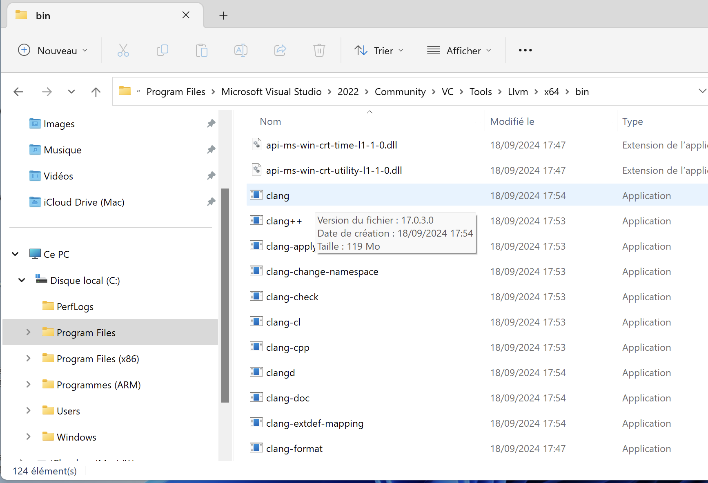
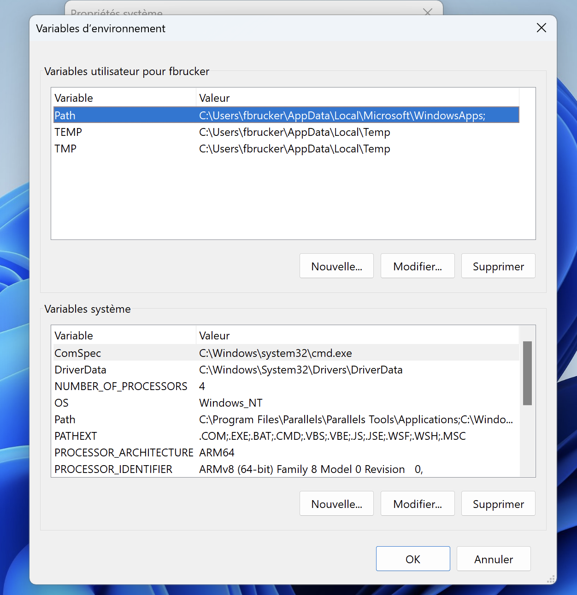
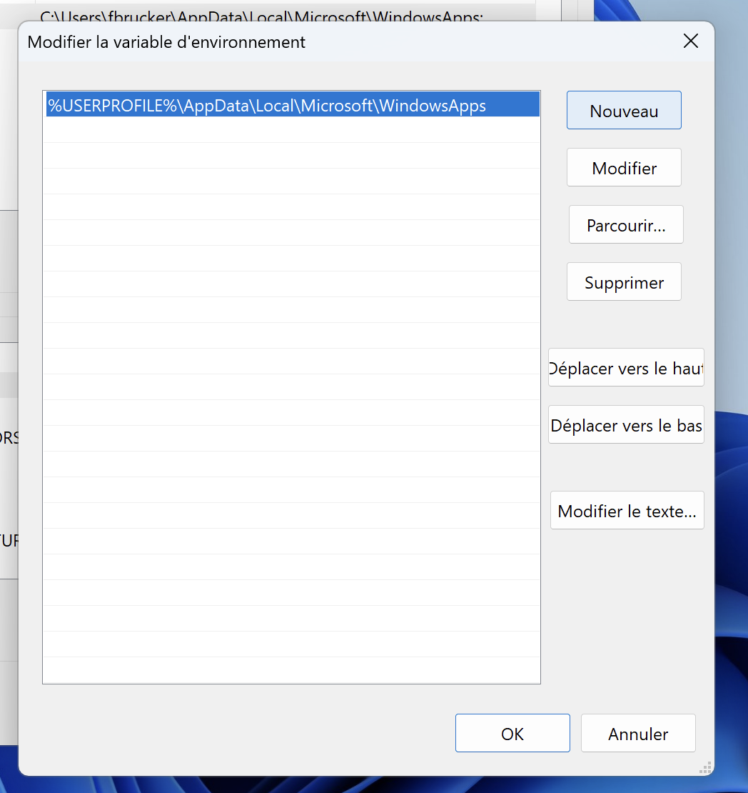
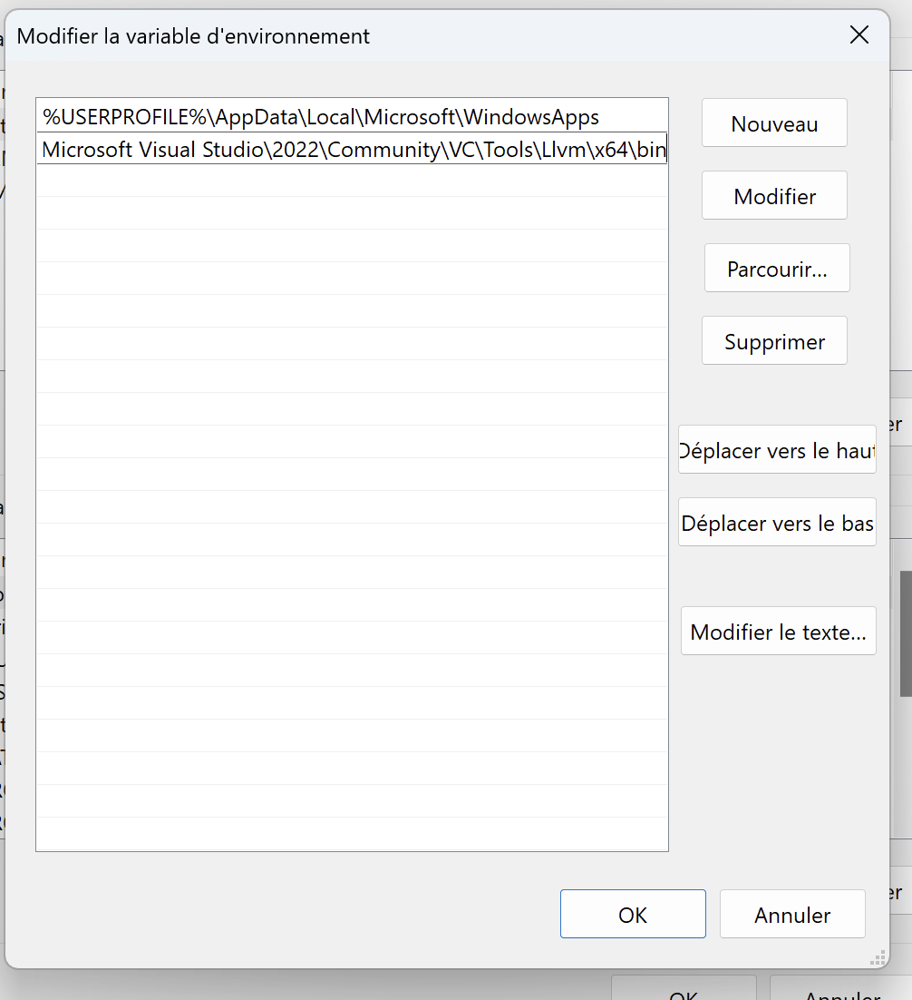

Installation llvm
Linux/Ubuntu
Fonctionne pour une installation native ou sous wsl.
Copiez coller les paquet à installer de la partie default package de la page : https://apt.llvm.org/. N'oubliez pas le sudo :
sudo apt-get install clang-format clang-tidy clang-tools clang clangd libc++-dev libc++1 libc++abi-dev libc++abi1 libclang-dev libclang1 liblldb-dev libllvm-ocaml-dev libomp-dev libomp5 lld lldb llvm-dev llvm-runtime llvm python3-clang
Cela devrait installer tout les paquets nécessaires.
Macos
- installer xcode
- installez les developper tools en tapant la commande
xcode-select --installdans un terminal - si vous avez un mac avec une puce arm, il vous faudra peut-être installer Rosetta. Dans un terminal tapez la commande
softwareupdate --install-rosetta
Windows 11 Visual Studio
Compilation sous windows. Cela va nécessiter quelques manipulations.
Installation de visual studio
La plus simple est de télécharger la version 2022 community de visual studio à partir d'ici : https://visualstudio.microsoft.com/fr/. Lors de l'installation, choisissez :
développement desktop en C++- cochez également
Outils C++ Clang pour windows
Ceci installera l'ide visual studio qui permet de développer des projet en C/C++. Nous n'allons pas utiliser cet ide, on restera avec notre bon vieux visual studio code, mais on va utiliser des programmes que cet IDE installe, en particulier le compilateur clang qui nous permettra de compiler nos programmes C directement avec la ligne de commande.
Ajout du chemin vers le compilateur au path
dans le dossier d'installation de visual studio. Il faudra ensuite ajouter le dossier contenant le compilateur clang PATH du système qui contient les dossiers contenant les fichiers exécutables indispensables depuis la ligne de commande ou la fenêtre de terminal. cette procédure contient plusieurs étapes :
Noter le chemin du dossier contenant clang
Noter le chemin du dossier contenant clang
En le cherchant dans un explorateur de fichier on trouve visual studio rangé dans program files :

Ce qui correspond au dossier : C:\Program Files\Microsoft Visual Studio\2022\Community\VC\Tools\Llvm\x64\bin
Il est peut-être dans un autre dossier pour vous. Une fois que vous avez trouvé le chemin, cliquez à côté de celui-ci dans l'explorateur de fichier pour avoir le nom exact.
Ouvrir l'application 'Paramètres système avancés'
Ouvrir l'application 'Paramètres système avancés'
Commencez par ouvrir les paramètres système avancés :

Tapez paramètres système avancés dans la barre de recherche puis cliquez dans l'application.

Trouver les PATH
Trouver les PATH
En plusieurs temps :
Il faut commencer par cliquer sur le bouton variables d'environnements puis de double-cliquer sur la ligne PATH de la nouvelle fenêtre :

Ajouter le nouveau chemin
Ajouter le nouveau chemin
De cette nouvelle fenêtre :

Cliquez sur nouveau puis copiez/collez le chemin vers le dossier contenant clang que l'on a précédemment identifié :

Fermez ensuite toutes les fenêtres que l'on a ouverte : le nouveau chemin ert ajouté au PATH.
Ne pas oublier de cliquer OK partout, sinon ce n'est pas sauvegardé.
On peut vérifier que le nouveau PATH est opérationnel en ouvrant une nouvelle fenêtre powershell et en tapant la commande :
clang -vVous devriez obtenir en réponse la version de clang installée :